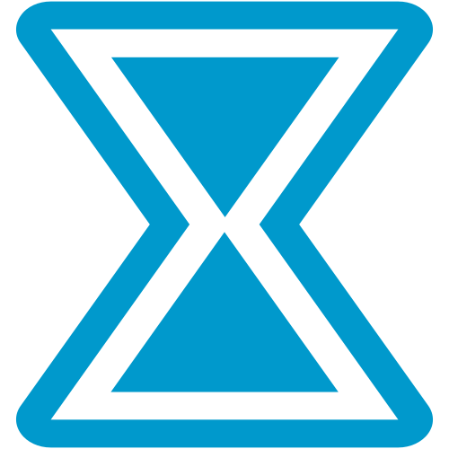

<nz-layout class="app-layout" >
  <nz-sider class="menu-sidebar" *ngIf="currentUser"
    nzCollapsible
    nzWidth="256px"
    nzBreakpoint="md"
    [(nzCollapsed)]="isCollapsed"
    [nzTrigger]="null">
    <div class="sidebar-logo">
      <a href="https://ng.ant.design/" target="_blank">
        
        <h1>TimeVioo</h1>
      </a>
    </div>
    <button nz-button nzType="primary" (click)="logout()">Logout</button>

    <ul   *ngIf="isAdmin" nz-menu nzTheme="dark" nzMode="inline" [nzInlineCollapsed]="isCollapsed">
      <li   nz-submenu nzOpen nzTitle="Utilisateurs" nzIcon="user">
        <ul>
          <li   nz-menu-item nzMatchRouter>
            <a routerLink="admin/roles">Rôles</a>
          </li  >
          <li  nz-menu-item nzMatchRouter>
            <a routerLink="admin/relations">Relations</a>
          </li>
        </ul>
      </li>
      <li nz-submenu nzOpen nzTitle="Calendrier" nzIcon="schedule">
        <ul>
          <li  nz-menu-item nzMatchRouter >
            <a routerLink="admin/calendar">Configurer  </a>
          </li>
        </ul>
      </li>
    </ul>

    <ul   *ngIf="! isAdmin"nz-menu nzTheme="dark" nzMode="inline" [nzInlineCollapsed]="isCollapsed">
      <li   nz-submenu nzOpen nzTitle="Mon espace" nzIcon="user">
        <ul>
          <li   nz-menu-item nzMatchRouter>
            <a routerLink="welcome">tableau de bord</a>
          </li  >
          <li  nz-menu-item nzMatchRouter>
            <a routerLink="user/home">Imputations</a>
          </li>
        </ul>
      </li>

    </ul>

  </nz-sider>
  <nz-layout >
    <nz-header   *ngIf="currentUser">
      <div class="app-header">

        <span class="header-trigger" (click)="isCollapsed = !isCollapsed">
            <i class="trigger" nz-icon [nzType]="isCollapsed ? 'menu-unfold' : 'menu-fold'"></i>

        </span>


      </div>

    </nz-header>
    <nz-content>
      <div class="inner-content" >
        <router-outlet></router-outlet>
      </div>
    </nz-content>
  </nz-layout>
</nz-layout>
